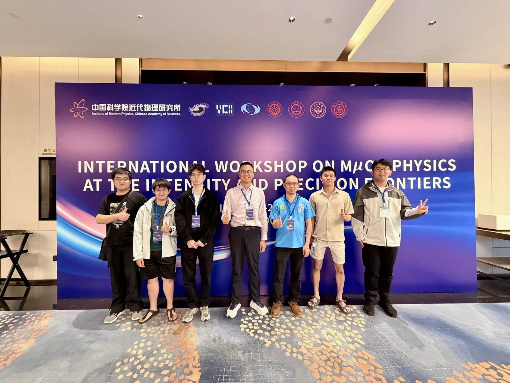
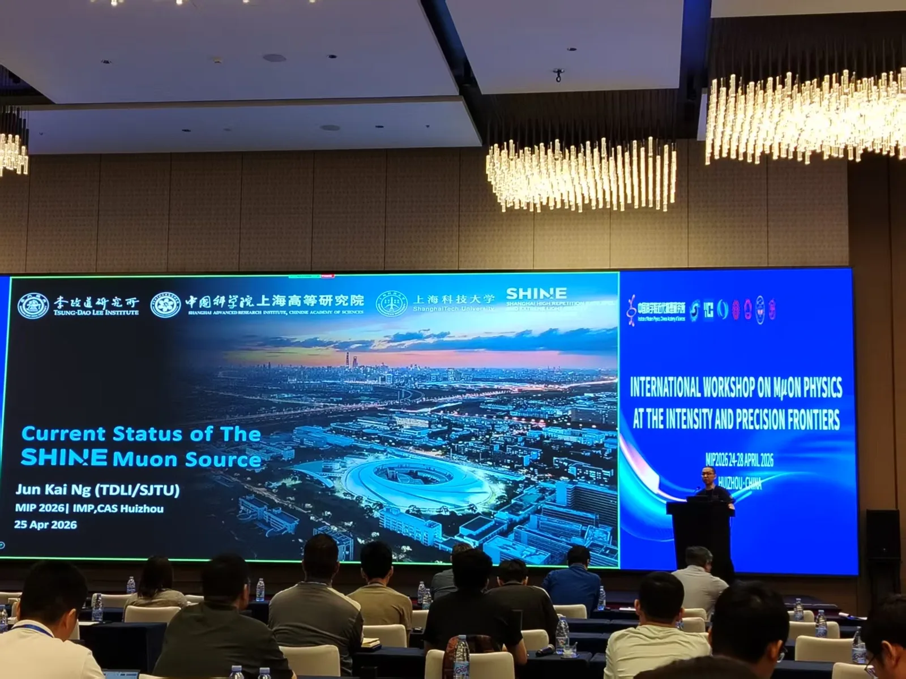
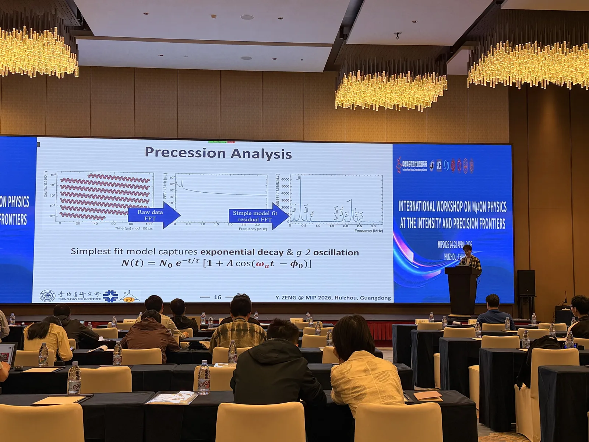

Our group took part in the International Workshop on Muon Physics at the Intensity and Precision Frontiers (MIP2026), held from 24 to 28 April 2026 in Huizhou, Guangdong, and organised by the Institute of Modern Physics, Chinese Academy of Sciences (IMP-CAS). The group gave two talks and two posters covering three of our research directions.


Talks
- Yonghao Zeng【曾永浩】 presented the final results of the Fermilab Muon g-2 Experiment, which measured the muon magnetic anomaly to 127 parts per billion, including how the anomalous precession frequency ωa is extracted from the data.
- Jun Kai Ng【黄俊凯】 gave the talk “Current Status of the SHINE Muon Source” on 25 April, on the high-repetition-rate electron-driven muon source planned at SHINE, developed with the Shanghai Advanced Research Institute (SARI) and ShanghaiTech University.
Posters
- Guan Ming Wong【黄冠铭】 presented the muon trigger detector (MTD) for the PSI muEDM experiment.
- Jia Cheng Yap【叶嘉诚】 presented the beam test of the SHINE Muon Source (SMS).




MIP is a yearly meeting for the muon physics community in China and beyond; see our reports from previous MIP workshops on the News page.